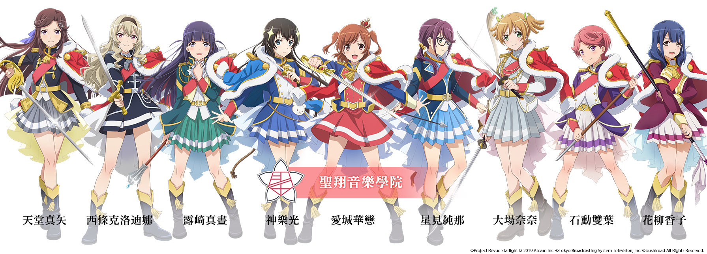
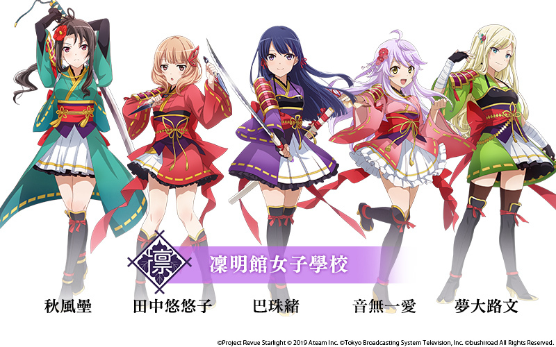
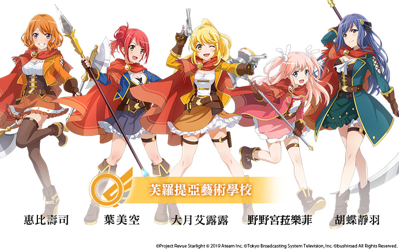
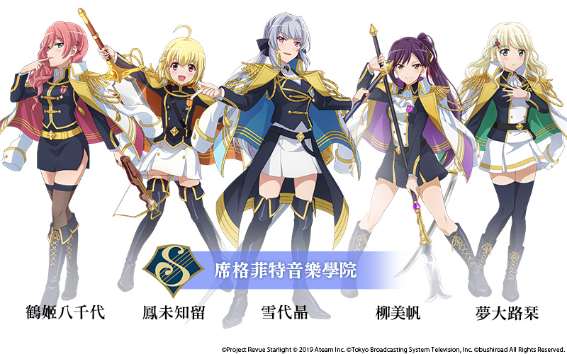

專門培養未來演劇界人才的正統女子學院，擁有100年的歷史。
該校擁有舞台女星養成的「演員養成科」，與舞台後方人員養成的「舞台創造科」。

與聖翔音樂學院齊名的傳統女子學校，專門培育大和撫子並給予支援。
在茶道、花道、書道、日本舞蹈頗有成就。但近期入學人數的減少，使得各學科的廢除跟合併越發頻繁。

以依據藝能分野開發學生潛能為標語的新設學校。
校風自由開放，授課內容也非常新穎。再加上健身中心、BBQ場地等等應有盡有，希望入學的人數大幅增加。
但在另一方面，卻也因為此校非常注重形式，導致它常被冠上庸俗的評價。

專門培育國際人才的音樂學院。
高端的設備、多彩的教員陣容，精英學校的存在不言自明。
該校有個特殊的文化，優秀的學生會被稱作「高貴皇君」，並被賦予諸多特權。
